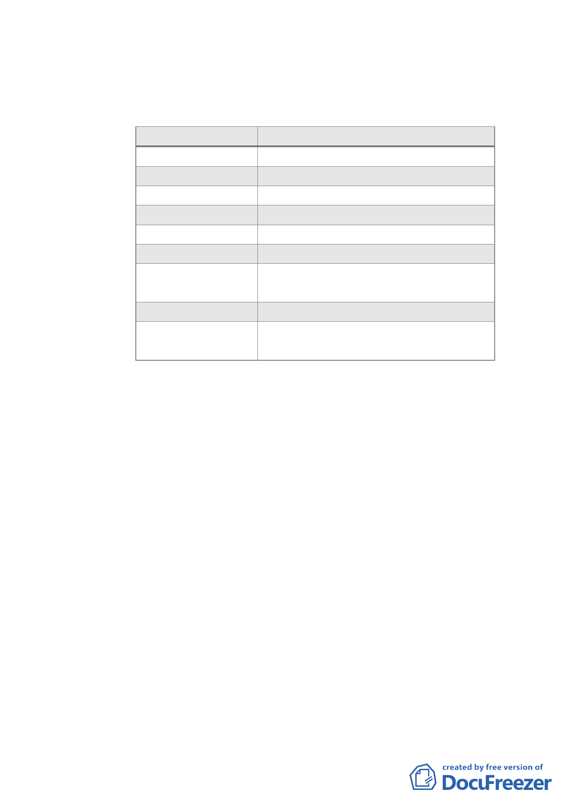

開放性、公益性以及貢獻程度，於委員會議上提出說明。
其中申請「室內挑空開放空間」者，應於計畫書內載明
配套管理機制併提大會確認。
案件別
申請獎勵項目
健豪建設 A2
室內挑空開放空間、廣場式開放空間
興富發建設 B2 廣場式開放空間
興富發建設 B10 廣場式開放空間、地面人行通道
宏普建設 B4
廣場式開放空間
長虹建設 A7
廣場式開放空間
忠泰建設 A2
室內挑空開放空間、廣場式開放空間
全聯企業 B2
廣場式開放空間、立體人行通道、地
面人行通道
瓏山林企業 B2 廣場式開放空間
福華大飯店 A2 室內挑空開放空間、廣場式開放空
間、地面人行通道
（五）為預先防範各申請案件後續倘違規使用以住宅名義出
售，致損害善意第三人權益，請市府發展局及法規會研
提管理措施，提大會說明。
（六）請各申請單位依本次專案小組會議審查意見修正計畫
書、圖，送交市府發展局審閱後於本（6）月 14 日下班
前送達本會，俾儘速協助排入本會 6 月份委員會議進行
審議。
（七）因本次會議時間已晚，未及討論之「修訂臺北市『基隆
河（中山橋至成美橋段）附近地區土地使用分區與都市
設計管制要點』（北段地區）計畫案」，將另擇期召開會
議進行討論。
三、99 年 6 月 21 日市都委會第 612 次委員會議決議：
（一）有關臺北好好看申請案之後續防範建築物違規使用部分，
除下列各點須再補充說明外，原則依發展局所提簡報內容
（共計 6 點新增規定）通過；並增列於計畫書中：
-3-